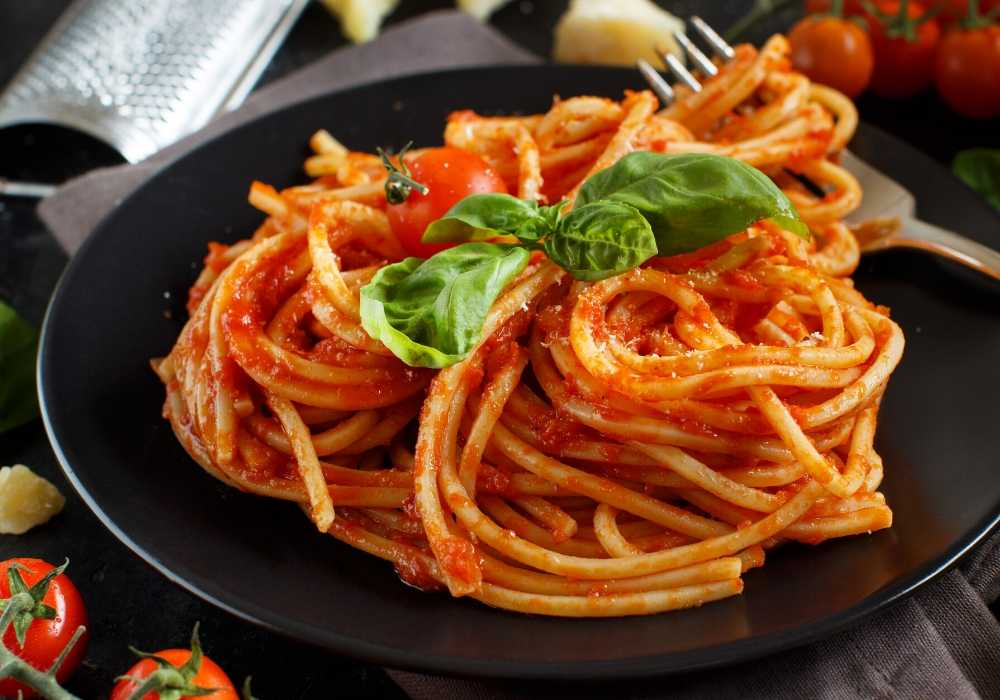

Noodles with tomato-sauce

noddles with Tomatosauce
Description
This is a simple recipe for pasta with tomato sauce.
It is quick, easy and delicious.
Ingredients
- 500g pasta
- 2 tbsp of olive oil
- 1 onion
- 4 cloves of garlic
- 500g strained tomatoes
- 1 tablespoon tomato paste
- 1 tbsp yeast flakes
- 1 tbsp garden herbs
Steps